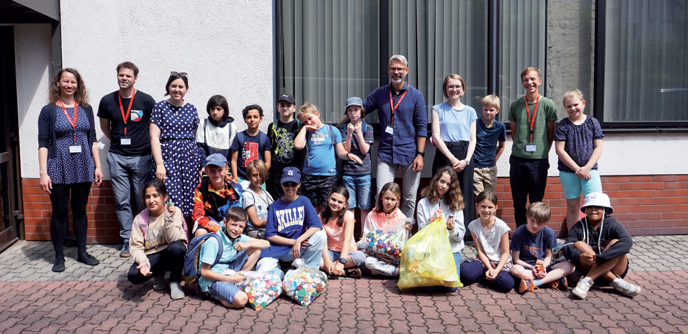
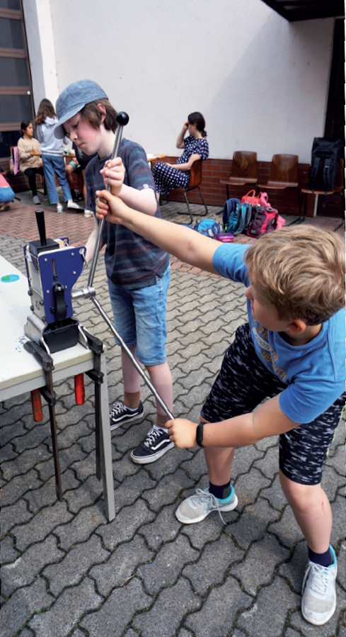
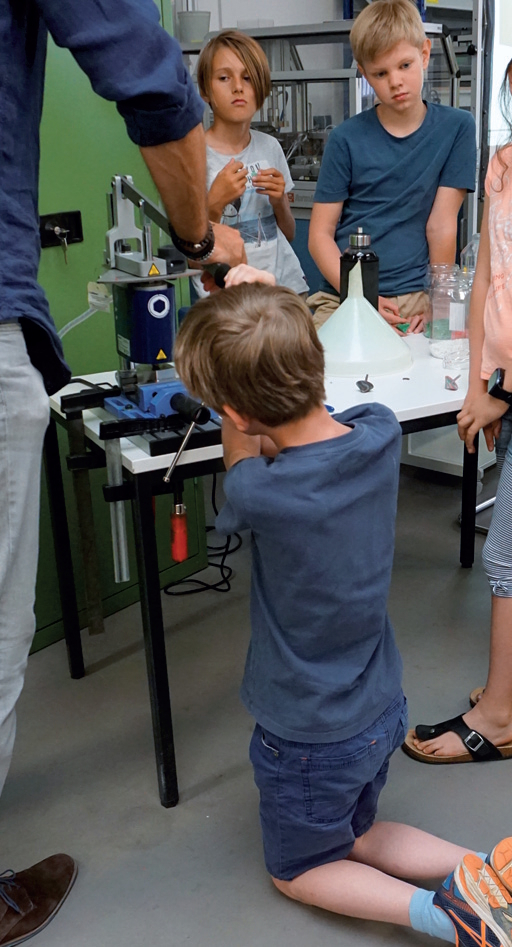
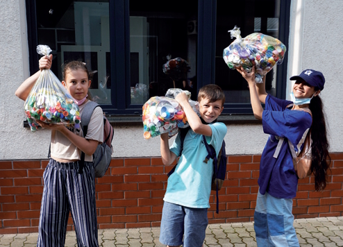

Am 17. März 2026 wurde der Verein Recycling macht Schule e.V. von sieben Gründungsmitgliedern ins Leben gerufen. Wir führen die Vision fort, Nachhaltigkeit und Technik direkt in den Schulalltag zu bringen.

Kunststoffe sind aus der heutigen Welt nicht mehr wegzudenken. In unserem Alltag sind sie omnipräsent – sie werden z. B. zur Isolation elektrischer Leiter verwendet und sind in jedem PKW, Tablet und Smartphone zu finden. Aufgrund ihrer großen Vielfalt und Eigenschaften gibt es in vielen Anwendungsgebieten keine Alternativen für Kunststoffe.
Trotz dieser Gegebenheiten besitzen Kunststoffe in der öffentlichen Wahrnehmung ein negatives Image. Besonders aus Sicht der Kinder (z. B. durch Bewegungen wie Fridays for Future) scheint diese Gemengelage einen Widerspruch in sich darzustellen. Wir möchten durch die Initiierung eines Recycling Days einen Beitrag zum verantwortungsvollen Umgang mit Kunststoffen leisten.


Durch einen spielerisch gestalteten Projekttag erlangen Schülerinnen ein grundlegendes Verständnis für die Kreislaufwirtschaft. Das Mitmachprojekt ist kindgerecht konzipiert und umfasst drei Stationen:
Zuvor gesammelte und gereinigte Abfälle werden gemeinsam gesichtet, aufbereitet und zu neuen Gegenständen verarbeitet.

So bringen wir das Projekt an Ihre Schule:
Wir fördern die Praxisnahe Wissensvermittlung und die Begeisterung für technische Berufe. Unsere Arbeit wurde mehrfach ausgezeichnet: